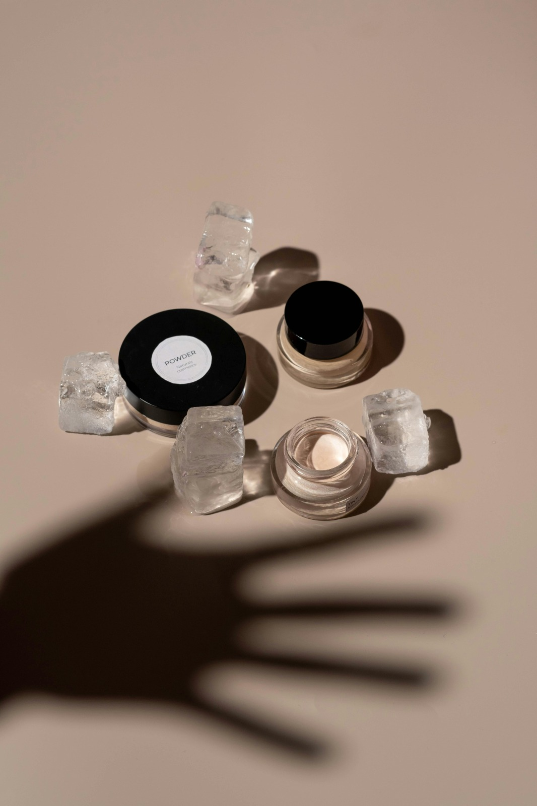

Sou Camila Scarani, esteticista graduada e apaixonada por cuidar da pele com base em ciência e
resultados reais. Desde 2023, atuo na estética com foco em consultorias personalizadas e protocolos como a
limpeza de pele confortável e o microagulhamento — sempre buscando validar esses tratamentos na ciência.
Acredito que cada pele tem uma história, e meu compromisso é entender a sua para alcançar resultados reais.
Atendo presencialmente na zona oeste do Rio de Janeiro e também ofereço consultorias online para quem deseja
transformar a rotina de skincare com segurança, conhecimento e de forma alcançável.
Algumas Consultorias
Consultoria de Skincare Natural

O skincare caseiro é uma prática comum, mas envolve riscos quando baseado em receitas populares sem respaldo
científico. A seguir, apresento seis tópicos que desmistificam mitos e verdades sobre cuidados caseiros com a
pele.
1.Limão e bicarbonato clareiam a pele?
Mito. Misturas com limão, bicarbonato de sódio e água oxigenada não clareiam a pele e podem causar
queimaduras
graves, manchas e dermatites. O limão, em contato com a luz solar, pode provocar fitofotodermatite,
resultando
em bolhas e cicatrizes.
2. Esfoliar o rosto com café, açúcar ou sal grosso é seguro?
Mito. Esses ingredientes têm partículas irregulares que podem causar microfissuras na pele, levando a
irritações, inflamações e até infecções. É preferível utilizar esfoliantes formulados especificamente para a
pele facial.
3. Pepino nos olhos reduz olheiras?
Verdade parcial. O pepino possui propriedades anti-inflamatórias e, quando aplicado gelado sobre os olhos,
pode reduzir temporariamente o inchaço e clarear a região. No entanto, o efeito é passageiro e não trata
causas profundas das olheiras.
4. Óleo de coco é bom para hidratar a pele?
Depende. O óleo de coco pode ser benéfico para peles secas, devido às suas propriedades hidratantes.
Contudo,
em peles oleosas ou acneicas, pode obstruir os poros e agravar a acne. É importante considerar o tipo de
pele
antes de utilizar.
5. Máscaras de abacate ou mamão são eficazes?
Verdade. Essas frutas contêm nutrientes que podem beneficiar a pele. Aplicadas como máscaras, podem
proporcionar hidratação e nutrição. No entanto, devem ser usadas com cautela e preferencialmente à noite,
para
evitar reações adversas ao sol.
6. Receitas caseiras são sempre seguras?
Mito. Muitas receitas caseiras carecem de respaldo científico e podem causar danos à pele, como irritações,
alergias e infecções. Além disso, a falta de conhecimento sobre o próprio tipo de pele pode levar ao uso
inadequado de ingredientes.
Conclusão: Embora algumas práticas caseiras possam oferecer benefícios temporários, é essencial
ter cautela e
buscar orientação profissional. O uso indiscriminado de receitas populares pode resultar em danos à pele.
Para
cuidados eficazes e seguros, recomenda-se consultar um profissinal e utilizar produtos com comprovação
científica e aprovação da Anvisa.
Perguntas Frequentes
1. Como funciona a consultoria?
A consultoria é 100% personalizada. Pode ser realizada por videochamada ou, em alguns casos, por gravação
enviada exclusivamente para você. Após uma anamnese completa, você recebe orientações detalhadas para cuidar da
sua pele com segurança e praticidade.
2. Qual é o objetivo da consultoria?
Te ajudar a escolher os cosméticos certos para melhorar a qualidade da sua pele.
3. Para quem a consultoria é indicada?
Para qualquer pessoa que deseja montar ou ajustar sua rotina de skincare de forma realista, acessível e eficaz
— mesmo sem ter muitos produtos em casa.
4. Você indica produtos durante a consultoria?
Sim! Posso recomendar dermocosméticos, produtos de farmácia ou opções naturais, sempre respeitando seu tipo de
pele, sua rotina e seu orçamento.
5. Preciso comprar muitos produtos para começar?
Não! O foco é adaptar a rotina com o que você já tem ou indicar o essencial, sem exageros.
6. Existe acompanhamento após a sessão?
Sim! Você terá acompanhamento por até 2 meses, com suporte para tirar dúvidas e ajustar o protocolo se
necessário.
7. Há alguma contraindicação?
Sim. A consultoria não é indicada para pessoas em tratamento de câncer de pele ou com condições que exigem
acompanhamento médico.
8. Quais são as formas de pagamento?
Você pode pagar via Pix ou cartão de crédito (link seguro de pagamento).
9. Como é feita a avaliação da pele?
Durante a anamnese, vamos conversar sobre seu histórico, hábitos, produtos usados e também analisar imagens da
pele, se necessário.